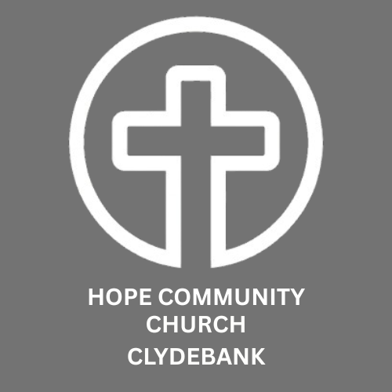

One mission. Two ministries.
Hope Community Church is the heart of our community.
Hope for Recovery is a practical outreach helping people rebuild their lives
through friendship, structure and encouragement.
Your support fuels both.

Support the Hope Mission
Bringing hope to Clydebank through faith, community and recovery
Hope Community Church exists to serve Clydebank with practical support, faith and community. Through our church family and our Hope for Recovery programme we walk alongside people rebuilding their lives.
120+
Recovery participants
30+
Active volunteers
10 yrs
Serving Clydebank
Every Week
Community gatherings
Hope Partnership
FOUNDATIONAL GIVING
- ✓ Monthly or annual commitment
- ✓ Gift Aid eligible
- ✓ Impact updates
- ✓ Support long-term ministry
Example Impact
- £10 – supports children's materials
- £25 – helps fund community events
- £50 – supports pastoral care & outreach

Buy us a Coffee
SPONTANEOUS SUPPORT
- ☕ One-off support
- ☕ Encourages recovery journeys
- ☕ Personal messages included
- ☕ Perfect for celebrations
What it helps fund
- £5 – coffee for the group
- £15 – course materials
- £30 – graduation celebration